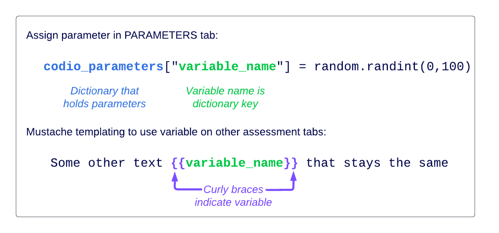
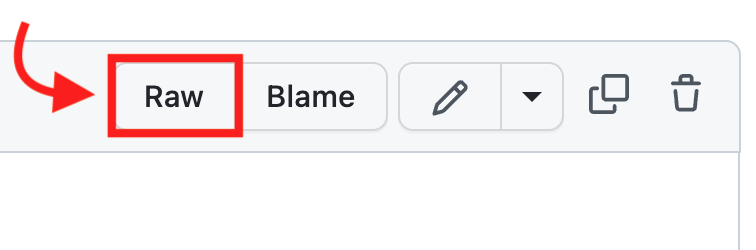
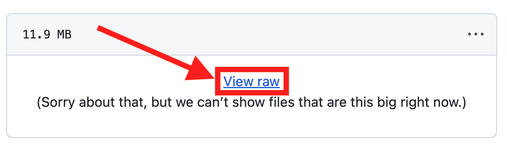

Parameterized assessments¶
Warning
New Parameterized Assessments can no longer be set up.
To edit/update existing assessments set up using Parameterized assessments that are using a script, go to the Parameters tab. This tab is not available for new assessments or for ones using Parameterized assessments that are not using a script.
{kind=link}
Parameters tab¶
The PARAMETERS tab has a large built-in code editor to enter python code that generates parameters.
{kind=link}
On the right-hand side, the Add Code Example button will generate 9 lines of code which (1) import the python random library, (2) declare the codio_parameters dictionary where you will store parameters names and their values, and (3) provide two sample parameters, one public and one private:
You can use private parameters to store the assessment solution, distractors, or anything students only need once they answer the question or submit their solution to the auto-grader.
Use public parameters for instructions or anything that will help you define the problem, like hints or parameters to evaluate.
Private parameters are available only inside the assessment; public parameters are available on the assessment page and the assessment itself, as shown in this example:
{kind=link}
The example above generates the following output:
{kind=link}
The Generate Sample Parameters button on the right-hand side will run the code in the editor and display in the small box below the button a sample set of generated parameters. If there is an error with the code, the box will turn red and the error message will be displayed.
Note
You can’t publish an assessment if the parameters tab is in an error state. You will get a generic error message when trying to publish. Generating sample parameter values is a good way to double-check your python code.
Creating and using parameters¶
To create a parameter, store a value in the codio_parameters dictionary. You can then refer to the parameter throughout the assessment within double curly brackets (otherwise known as mustache templating).

Note
If you parameters include special characters, try using triple curly braces: {{{my_parameter}}}.
See the first image on this page for an example of creating parameters. Once created, you can then refer to parameters throughout the other fields in your assessment and in the page your assessment is added (e.g. instructions on the General tab, fields on the Execution tab, rationale on the Grading tab, instructions before the assessment).
{kind=link}
{kind=link}
Creating parameters from on web-based content¶
When parameters are generated, the script in the PARAMETERS tab does not have access to the files in the box or on the stack. To pull a random choice from a large dataset, instead of hardcoding the dataset into the script, you can use Github or some other web-based CDN.
If you choose to use Github, make sure your script has a URL that indicates the RAW version of the file which should look similar to:
https://raw.githubusercontent.com/github_user_name/repo_name/branch/folder_name/file_name.txt
- To find this URL, find the file through the Github interface and click the RAW button:

- If it is a particularly large file, Github will present you a link instead:

Here is an example script:
import random, string
from urllib.request import urlopen
codio_parameters = dict()
words_file = urlopen("https://raw.githubusercontent.com/lorenbrichter/Words/master/Words/en.txt")
words = words_file.readlines()
codio_parameters["OUTPUT"] = words[random.randint(0,len(words))-1].decode('utf-8')
Limitations:
We do not advise doing API calls during parameter generation due to the introduction of dependency on another system.
- Parameters are only re-generated on Publish if the PARAMETERS code has been changed. Updating to only the CDN or Github repo will NOT re-generate the parameters.
Best practice is to upload a new file with a new name – and when you update the file name on the PARAMETERS tab, this will cause the regeneration and ensure clarity on which version of the file the assessment is using.
Accessing parameters in Auto-grading scripts¶
When using parameters with assessments executing auto-grading scripts, such as with Advanced Code Tests, you can access parameters from the CODIO_PARAMETERS environment variable.
- To test your parameterized auto-grading script, you need to do one of the following:
Within the authoring version of the assignment, click Generate Sample Parameters on the PARAMETERS tab and Save the assessment (even if you made no changes). This creates the
CODIO_PARAMETERSenvironment variable within your authoring version of the assignment. Then you can simply click the assessment button when previewing the Guide. (Note:CODIO_PARAMETERSenvironment variable is only accessible through the assessment, not via the command line).publish your assignment and either Preview as a teacher or as a Test Student
manually create the
CODIO_PARAMETERSenvironment variable inside the authoring version of the assignment
More examples¶
- You can find more examples of parameterized assessments in Codio: